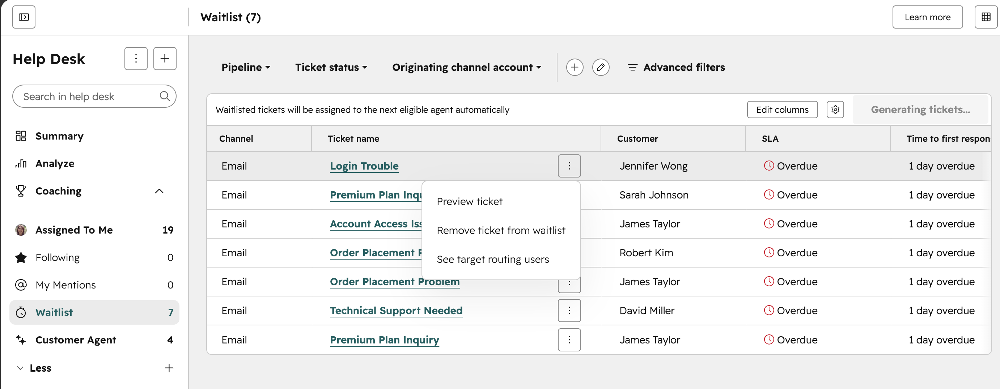
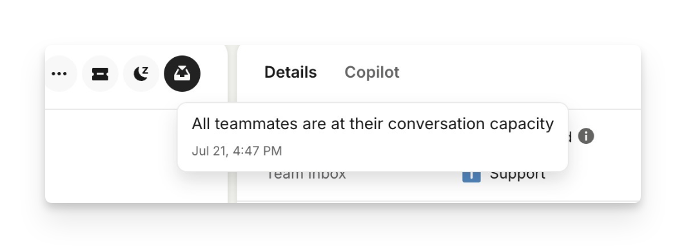
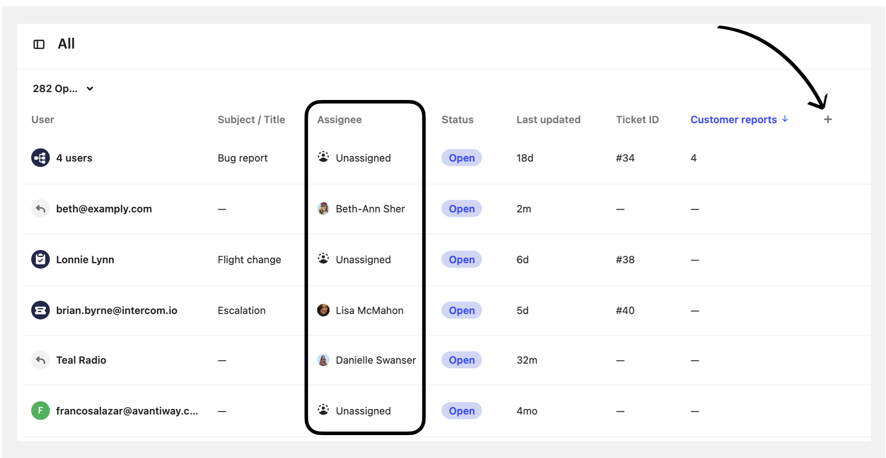
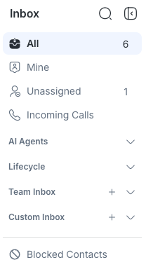
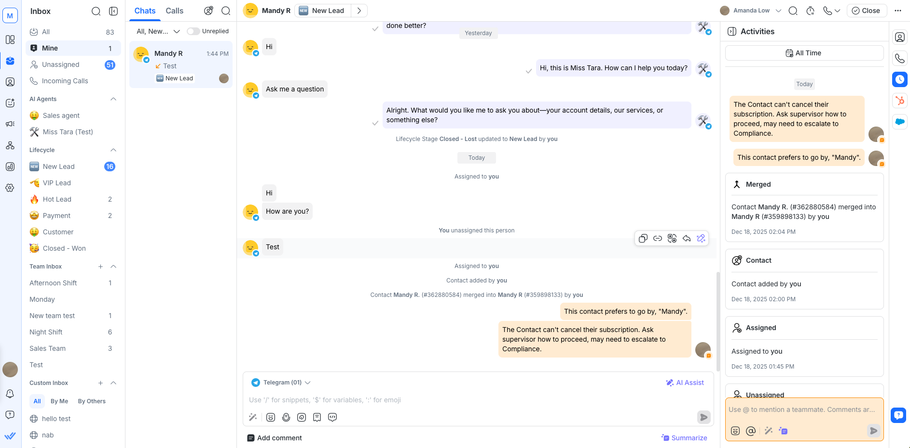
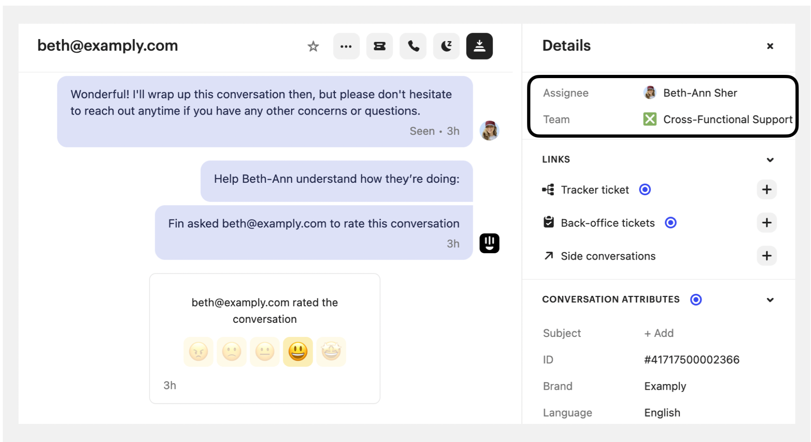
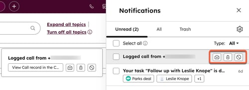
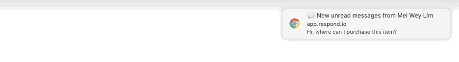

Đúng hàng chờ capacityHubSpot — WaitlistRõ nhất ở cấp danh sách: Waitlist riêng, số lượng, SLA và banner tự giao cho agent đủ điều kiện. Đây là Help Desk Ticket, không phải legacy Conversations Inbox.
Đúng lý do hết capacityIntercom — lý do chưa giaoTooltip giải thích mọi teammate đã đầy capacity. Rõ ở từng hội thoại; ảnh này không cho thấy toàn bộ danh sách chờ hay thứ tự ưu tiên.
Unassigned, chưa chứng minh chờ capacityIntercom — bảng AssigneeBảng cho thấy cuộc nào đã có người xử lý, cuộc nào Unassigned. Không thể suy mọi dòng Unassigned đều đang chờ vì đầy tải.
Inbox chung, chưa phải Waitlist riêngrespond.io — Unassigned / Team InboxSidebar dễ hiểu và gọn. Tuy nhiên Unassigned không giải thích chờ vì offline, đầy tải, thiếu rule hay chưa từng phân công.
Đúng trạng thái / lịch sử đã giaorespond.io — Assigned to youTrong workspace có Mine, dòng Assigned to you trong hội thoại và Activities ghi thời điểm Assigned. Đây là dấu vết giao việc; không chứng minh popup xuất hiện lúc vừa nhận việc.
Đúng người đang phụ tráchIntercom — Assignee và TeamDetails cho thấy người và team được giao. Rõ quyền sở hữu hiện tại, nhưng không có badge mới giao hoặc alert incoming assignment trong ảnh.
Thông báo chung; chưa đúng assignmentHubSpot — NotificationsẢnh chính thức cho thấy popup và ngăn Notifications. Nội dung là logged call / task, không phải nhận hội thoại mới. Ảnh nguồn nhỏ, không thể dùng để đánh giá chi tiết alert assignment.
Thông báo tin nhắn mới; chưa đúng assignmentrespond.io — desktop toastKhung hình 32 (đánh số từ 0) trích từ GIF chính thức. Popup báo New unread messages, không phải Contact Assigned. Chỉ tham khảo hình thức desktop toast.